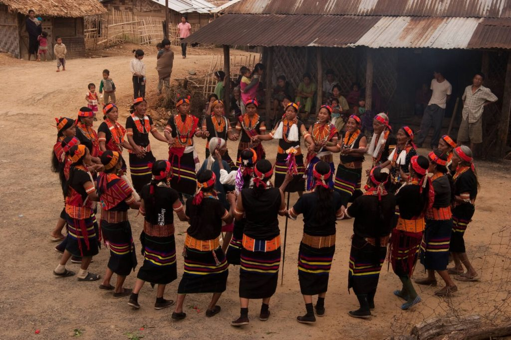

Welcome to Nagaland!

Nagaland, located in northeastern India, is renowned for its vibrant cultural heritage, diverse tribal traditions,
and picturesque landscapes. The culture of Nagaland is characterized by the customs and practices of its major
tribes, each with its unique language, attire, and rituals.
Festivals are central to Naga culture, with the Hornbill Festival being the most prominent. Celebrated in
December, this festival showcases the rich heritage of all Naga tribes through traditional dances, music, crafts,
and food. Other significant festivals include Sekrenyi of the Angami tribe, Moatsu of the Ao tribe, and Tuluni of
the Sumi tribe, each celebrating seasonal cycles, harvests, and community bonding.
Naga cuisine is known for its use of fresh, local ingredients and distinctive flavors. Staple dishes include
smoked pork with bamboo shoots, Axone (fermented soybean), and Anishi (dried yam leaves). Rice is a staple food,
often accompanied by a variety of meats, fermented products, and spicy chutneys, reflecting the agrarian lifestyle
and culinary ingenuity of the Naga people.
Music and dance are integral to Nagaland's cultural identity. Traditional Naga music often features folk songs and
chants that recount historical events, folklore, and daily life. Each tribe has its own unique dance forms, such
as the War Dance, Zeliang Dance, and Harvest Dance, performed during festivals and important ceremonies. These
dances are characterized by energetic movements, elaborate costumes, and the rhythmic beats of traditional
instruments like log drums and bamboo flutes.
Nagaland's natural beauty, with its rolling hills, dense forests, and serene valleys, provides a stunning backdrop
for cultural and eco-tourism activities. Destinations like Dzükou Valley, Japfu Peak, and the villages of Khonoma
and Mon offer visitors a chance to experience the state's natural splendor and traditional way of life.
The state's handicrafts, including intricate beadwork, traditional shawls, wood carvings, and bamboo products,
reflect the artistic skills and cultural heritage of the Naga tribes. These crafts are often used in daily life
and rituals, showcasing the community's connection to their environment and traditions.